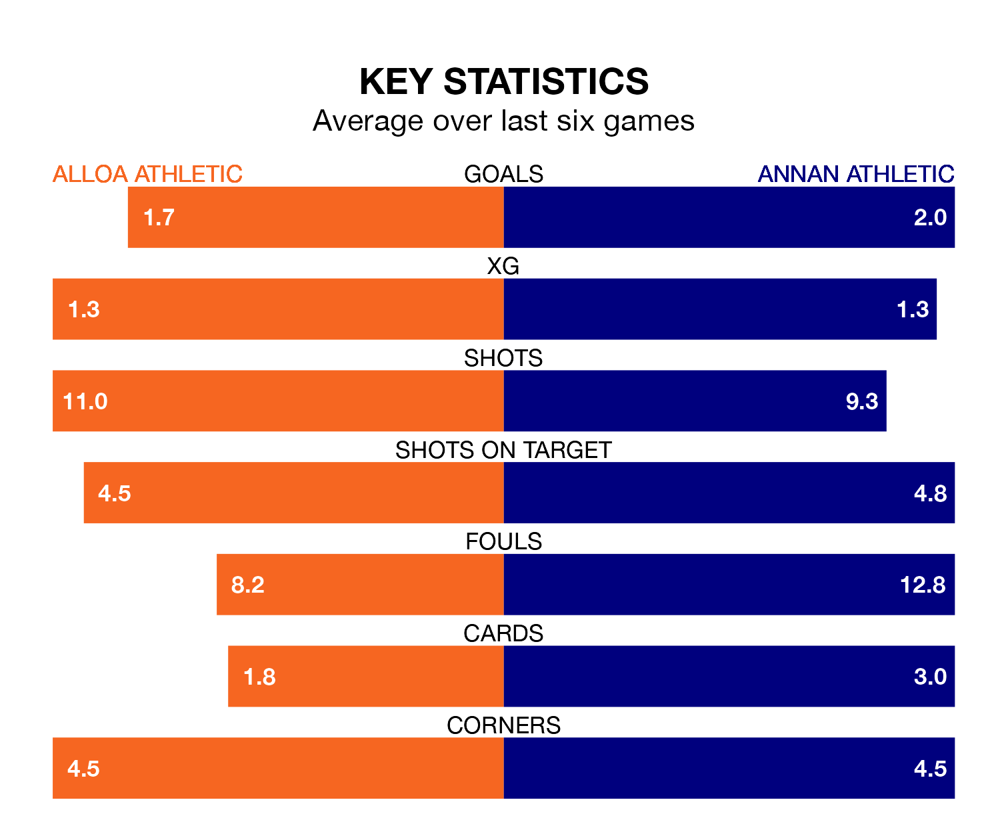

Struggling Annan Athletic face Alloa Athletic away at the Indodrill Stadium on Tuesday looking to build on a win in their last league outing.
After securing all three points with a 3-2 victory over Hamilton Academical on Saturday, the Galabankies sit ninth in League One.
They travel to play an Alloa side fifth in the standings, who also won their last match, 1-0 against Stirling Albion.
With 29 goals in 22 games so far this season, Alloa are the league's third-lowest scorers with 1.3 goals per game. And they are conceding more than average, letting in 35 goals at a rate of 1.6 per game.
Annan are also below average scorers, with 1.4 goals per game, compared to a league average of 1.5. They have conceded 2.0 goals per game.
In Thomas Goss, Annan Athletic have one of the league's most on-form strikers so far this season. He has notched eight goals in 19 appearances, to sit fifth in the scoring charts.
Alloa Athletic's top scorers, with five goals each, are Alistair Roy and Bobby Wales.
The home team are in reasonable form in League One, with three wins and two draws from their last six games.
With two wins and two draws over that period, the Galabankies' form is worse – they have taken eight points from 18, compared to Alloa's 11.
Over the last two years, Alloa and Annan have played each other twice. Alloa won one of them and they drew the other.
Their last meeting was on February 3, when Alloa won 3-2 away.
Tuesday's match will be refereed by Scott Lambie, who has taken charge of three League One games so far this season, issuing one red card and booking six players. He has not awarded any penalties.
He is yet to oversee a match featuring either Alloa or Annan this season.
Updated: 13:30 (UTC), 12/02/24